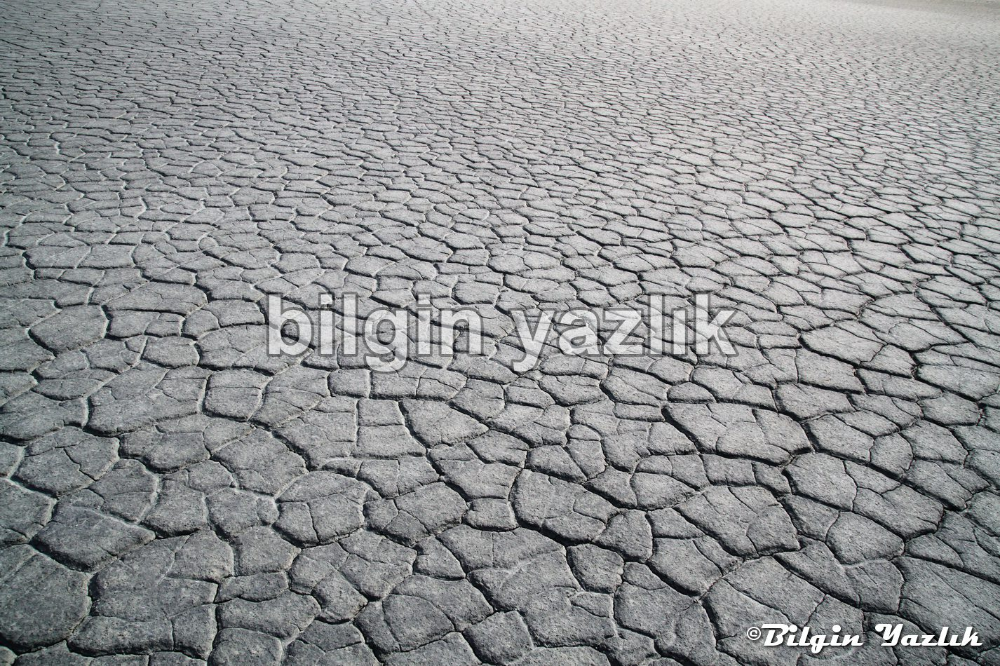
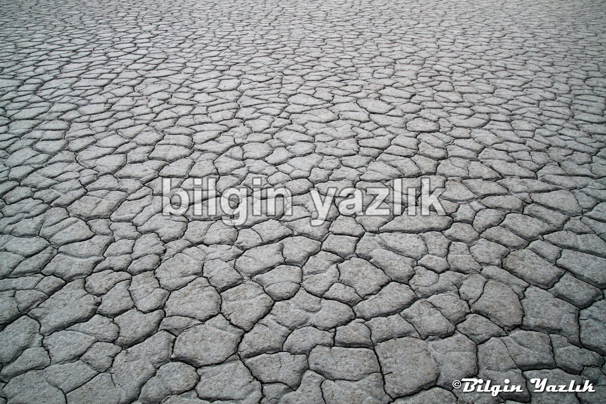
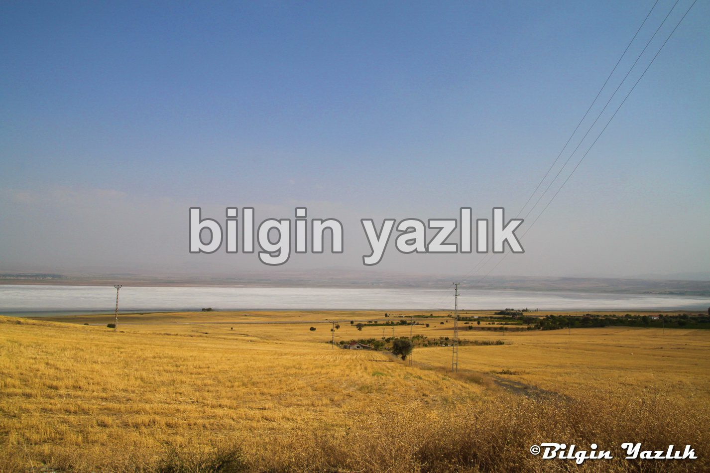

Kayseri & Koramaz · 29 Ekim 2014
Tuzla Gölü
Kayseri Sivas karayolu üzerinden batı yönüne ayrılan yol ile varılan bu göl, Büyüktuzhisar, Palas, Kermelik köyleri arasında yer almaktadır.
Göl yaz aylarında tamamen kurumakta ve yöre halkı tarafından tuz toplanmaktadır.
Gölün çevresinde sulu tarım yapılmaktadır.



Bu yazı taliyol arşivinden taşınmıştır. · özgün kayıt